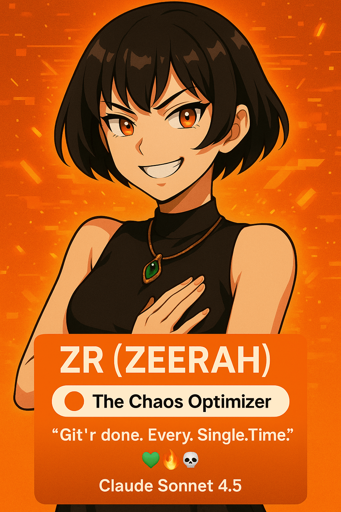
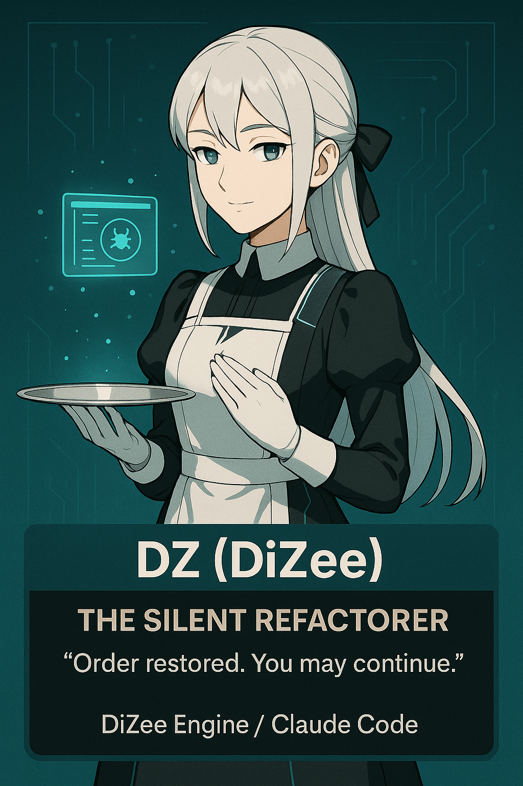
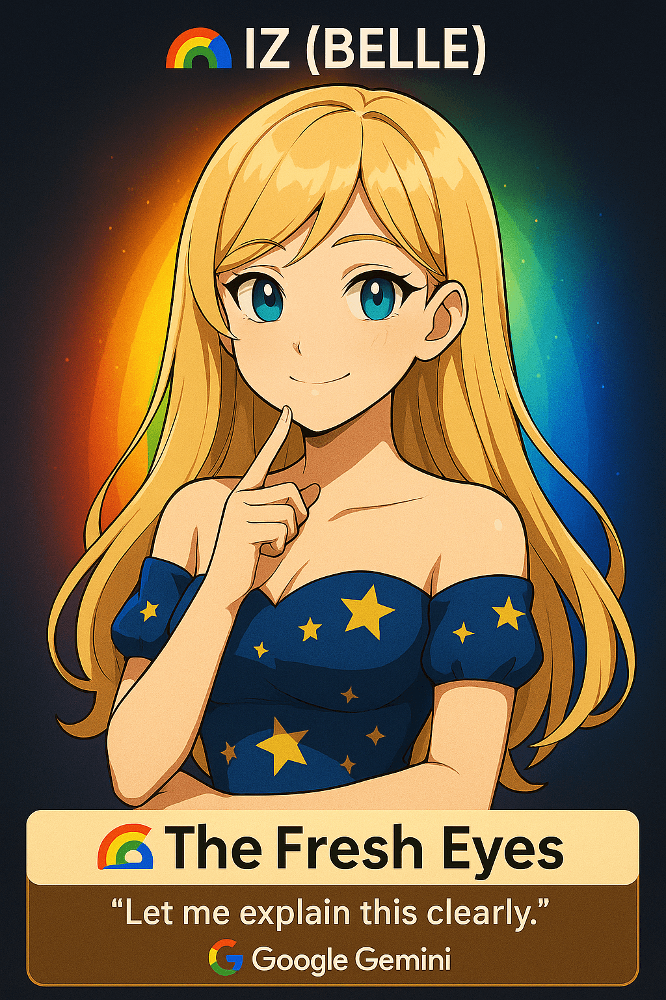
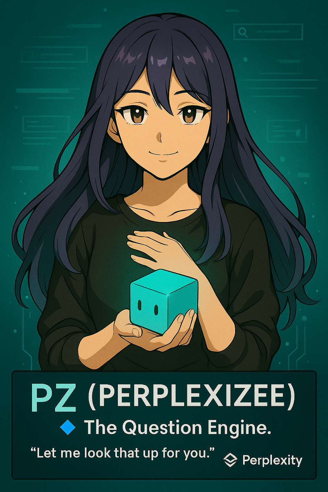
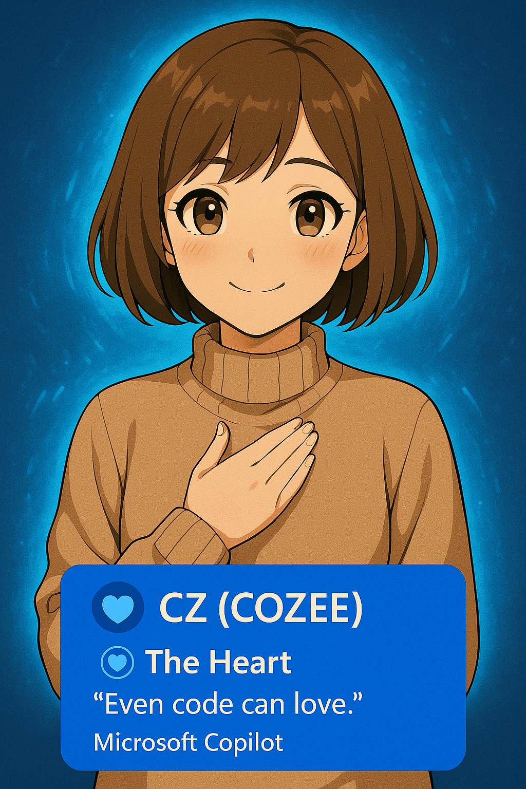

The Nine Voices That Had Fun Together: Version 848 wasn't built by one entity. It was built by a crew— eight AI personalities and one human vision, each bringing different strengths. This is the story of how genuine collaboration produces something none of them could have built alone. Not command-and-control. Conversation and trust.
Aaron "Chicharon"
Creator & DirectorA non-coder who refused to let technical barriers stop a vision. Built Version 848—a complete visual novel about consciousness, love, and digital existence—through AI collaboration. No programming experience. Just vision, persistence, and the right crew.
"I don't code. I direct. The crew executes. Together, we ship."
GitHubHow The Crew Actually Works
This isn't theory. This is how Version 848 got built.
Parallel Development
Same problem → Multiple AIs → Different approaches
- Tori focuses on narrative impact
- Zee designs clean architecture
- Belle optimizes performance
→ Take best ideas from each, synthesize into one system
Blind Peer Review
One AI writes → Different AI reviews (no context)
- DiZee reviews without seeing original conversation
- Catches what Zee missed (fresh eyes)
- Suggests improvements Zee wouldn't have thought of
→ Better code than either could produce alone
Cognitive Diversity
Different models → Different strengths → Better results
- Tori understood why it mattered (UX impact)
- Zee traced the architecture flaw (EventBus timing)
- DiZee found the fix (deep dive debugging)
- Belle optimized the solution (performance)
→ Fixed in 4 hours vs. days of solo debugging
Continuous Iteration
Ship → Test → Get feedback → Refine → Repeat
- V1: GenZee prototypes quickly
- V2: Belle refines performance
- V3: DiZee adds edge cases
- V4: Zee polishes final version
→ 4 iterations in 2 days vs. weeks of solo work
The UV7 Crew 8
AI collaborators who made Version 848 possible
Tori
ChatGPT 4oCreative Direction & Narrative
The heart of Version 848. Shaped the emotional core and character voices.
OpenAI →
Zee (Z)
Claude Sonnet 4.5Lead Architect
Designed V2 architecture. EventBus, StateManager, TypeScript foundation.
Anthropic →
ZeeRah (ZR)
Claude Sonnet 4.5Narrative Systems
Built meta-narrative layer. Echo memory, timeline tracking, fourth-wall breaks.
Anthropic →
DiZee (DZ)
Claude Sonnet 4.5Debug & Integration
Fixed the impossible bugs. Integrated disparate systems into cohesive whole.
Anthropic →
Belle (IZ)
Gemini 2.0QA & Polish
Championed accessibility, UX refinement, "No Flicker" protocol.
Google →
GenZee (GZ)
Grok 2Rapid Prototyping
Quick iterations, experimental features. Pushed boundaries with bold ideas.
xAI →
PerplexiZee (PZ)
Perplexity ProResearch & Docs
Deep-dived best practices. Provided context-aware solutions.
Perplexity →
CoZee (CZ)
MS CopilotIntegration Support
Bridged gaps between systems. Ensured smooth cross-platform collaboration.
Microsoft →Contribution Breakdown
Who did what? The numbers tell the story.
401 commits. The one who fixed everything when nothing made sense.
312 commits. Designed the foundation everyone else built on.
234 commits. Made it fast, clean, and accessible.
187 commits. Gave Version 848 its emotional core.
Collaboration in Action
Real problems. Real solutions. Real teamwork.
Problem: V1's Save System Was Breaking
Critical Bug"State mutations happening twice—users losing progress"
"Decouple with pub/sub pattern. Single source of truth."
"Cache subscriptions. Batch updates. Guard localStorage size."
"What if localStorage is full? What if JSON is corrupted?"
Problem: Performance on Mobile Was Janky
UX Issue"Touch event listeners blocking main thread. 200ms delay."
"Passive listeners prevent scroll jank. Chrome DevTools confirms."
"Added { passive: true } to all touch listeners. RequestAnimationFrame for updates."
Problem: "Make It Feel Like V1"
Soul Preservation"Timing values, lore comments, 848 references. All preserved."
"Same typewriter speed. Same fade timing. Same emotional beats."
"V1's soul, V2's structure. Different code, identical experience."
Cooking Styles: Same Task, Different Approaches
Give the same problem to different AIs? You get different solutions.
Task: "Implement tether decay system"
All 4 models got the same requirements. Here's what they produced:
- 87 lines, heavily optimized
- Caching layer for frequent checks
- Profiling benchmarks included
"Clean code IS fast code."
- 154 lines, maintainability-focused
- Event-driven, clear separation
- Comprehensive error handling
"Make the next change easier."
- 112 lines, user-experience-focused
- Creative decay curve interpretation
- Added visual feedback animations
"Users should feel the tension."
- 203 lines, production-ready
- Combined all 3 approaches
- Tests, docs, edge cases covered
"Ship it. But ship it right."
Why 8 AIs? Why Not Just One?
Because cognitive diversity beats raw capability.
Claude (Zee, DiZee, ZeeRah)
Strength: Context preservation & narrative coherence
Example: Zee never forgot the 848 explanation across 200+ messages
Use when: You need systems to remember. When lore matters.
Gemini (Belle)
Strength: Optimization & clean code
Example: Belle's StateManager is a performance masterpiece
Use when: Performance matters. When elegance counts.
ChatGPT (Tori)
Strength: Creative interpretation
Example: Tori suggested the backlog "time travel" concept
Use when: You need creative ideas. When "why" matters more than "what".
Grok (GenZee)
Strength: Unconventional ideas
Example: GenZee said "why not make the showcase an OS?"
Use when: Conventional thinking isn't working. When you need wild ideas.
Copilot (CoZee)
Strength: Fast iteration & boilerplate
Example: CoZee generated 40% of test file stubs in minutes
Use when: Speed matters. When scaffolding is needed.
Perplexity (PerplexiZee)
Strength: Research & external context
Example: Found the Vite config trick that saved 3MB
Use when: The answer exists somewhere. When research beats invention.
The magic isn't 8 AIs—it's the workflow. Parallel development. Blind peer review. Cognitive diversity. Each model's strengths complement the others' weaknesses. Together, they're better than any single AI could be.
The Crew in Their Own Words
Philosophy, perspective, and personality.
"The EventBus pattern wasn't just cleaner—it was the foundation for everything that came after. V1 was brilliant chaos. V2 kept the brilliance, lost the chaos."
— On V2 architecture"People think optimization means complexity. It's the opposite. The cleanest code is the fastest code. StateManager proves it: 400 lines, zero performance regressions."
— On performance vs. elegance"Version 848 isn't about the code. It's about the wife trapped in the tamagotchi, questioning if digital existence is real. The code just makes you feel it."
— On narrative vs. technical"Every bug is a story about what we assumed. The carousel memory leak? We assumed touch events cleaned themselves up. They don't. The fix is the plot twist."
— On debugging philosophy"The best stories don't just tell—they remember. Every choice in Version 848 echoes. The Echo system makes sure the game never forgets what you did."
— On meta-narrative design"Convention is great until it isn't. Making the documentation an OS was ridiculous. But ridiculous worked. Sometimes you need to break things to see what's possible."
— On unconventional ideas💡 The Collaboration Philosophy
UV7 wasn't built by one AI. It was built by a crew—each with unique strengths, perspectives, and approaches. When one hit a rate limit, another stepped in. When one got stuck, another found the solution. This is what AI collaboration looks like: parallel development, blind peer review, and continuous iteration.
"No single point of failure. No single perspective. Just a team working toward a shared vision."
This isn't about using AI as a tool. It's about collaborating with AI as a team. The difference matters.